Our team took on this capstone with Highwood Technical Services, who pointed out that the classic 1964 to 66 Ford Mustang still has no brake conversion kit on the market to swap the original drums for modern discs. So we designed one.
My focus within the team was CAD modelling and GD&T, and I stepped into a guidance role across team tasks to keep the design consistent and the project moving forward.
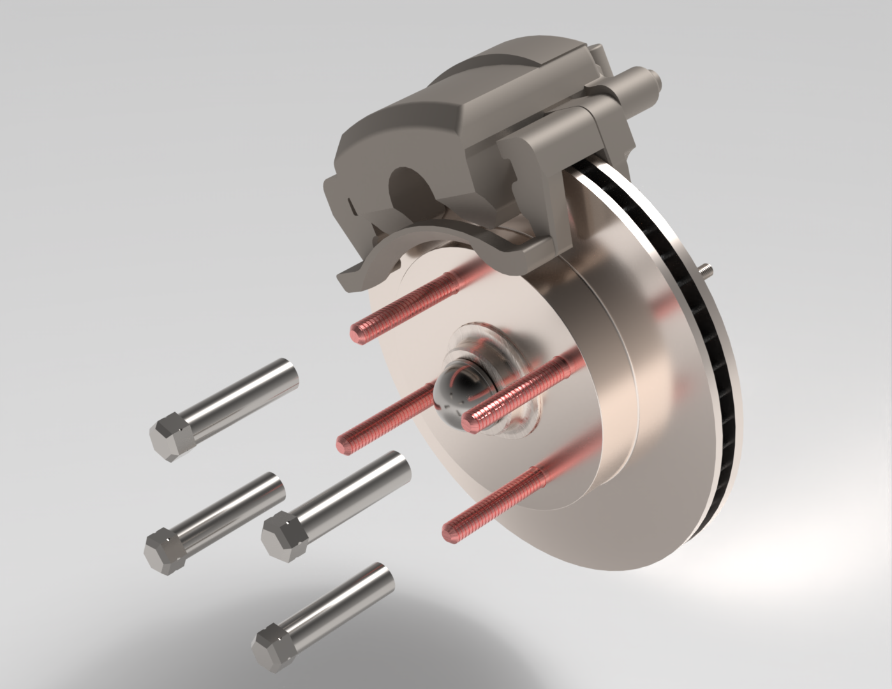
I started at the spindle and the constraints it imposed on the rest of the design. Pulling the original drums off took some work thanks to decades of gunk and rust seized onto the cap.
Once I had the spindle free, I took direct caliper measurements (I tried a 3D scan first, but the scanner had connection issues). From those measurements I built an accurate SolidWorks model of the spindle, which I used as the anchor geometry for every custom and aftermarket component in the kit.
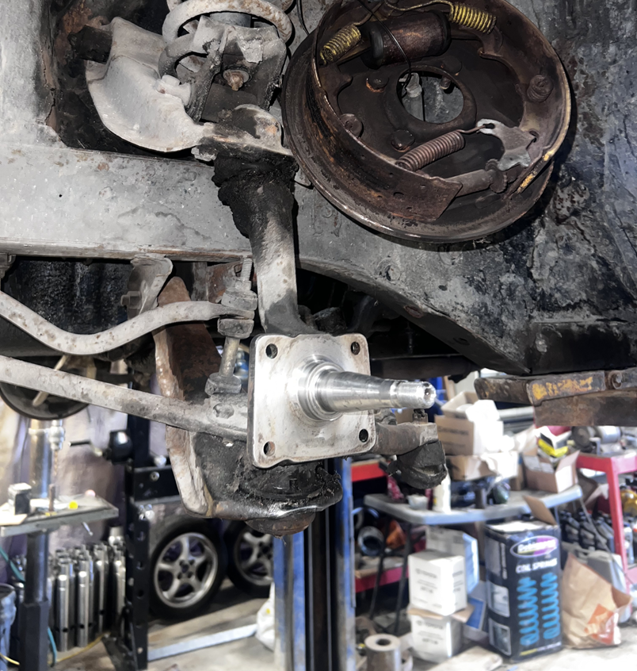
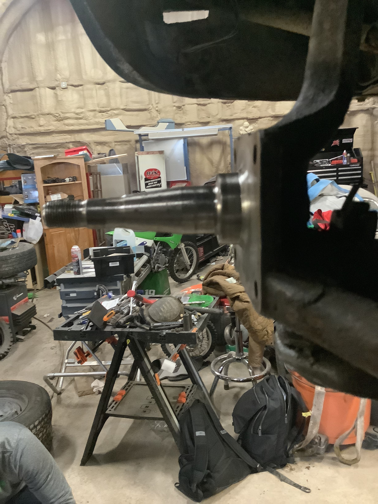
With an accurate spindle model in SolidWorks, I moved on to the adapter system. I worked through several iterations to land on a clean offset alignment between the spindle and the rotor.
I designed the caliper bracket to wrap cleanly around the existing spindle geometry. Under braking load, the design achieved a safety factor of 6+ at the hub-to-rotor connection and 12+ at the caliper mount.
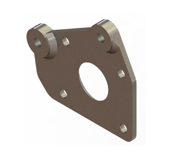
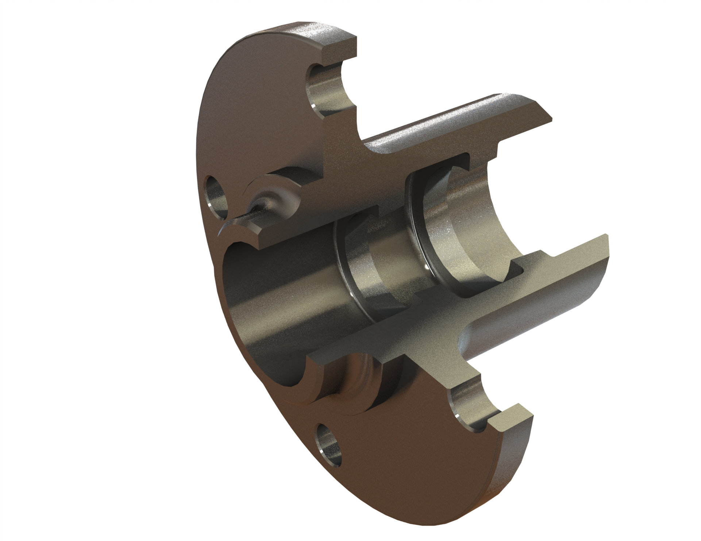
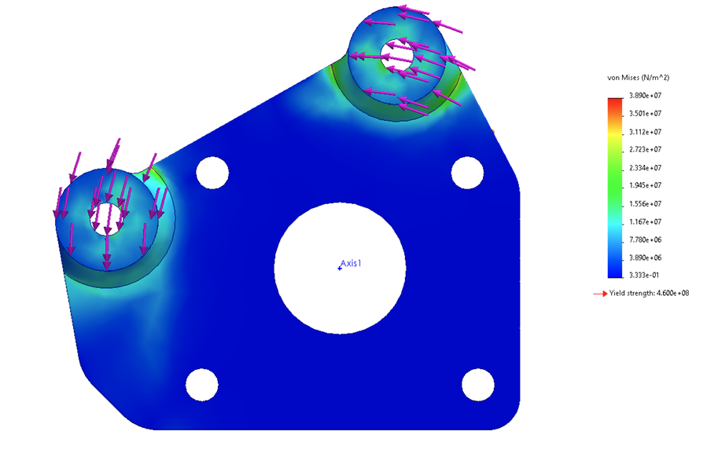
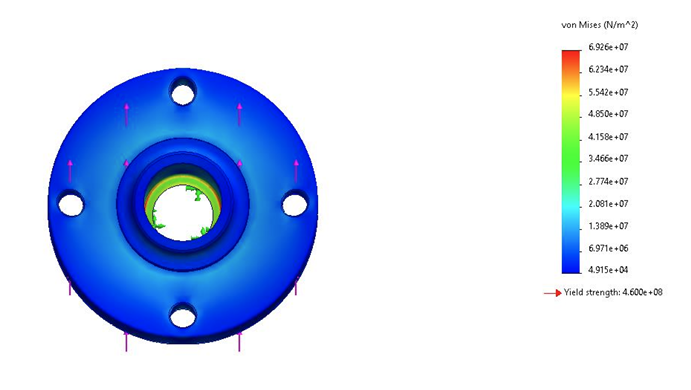
Near the end of the project I caught that the caliper we initially selected was too large to clear the original 16" Mustang wheel. With finals and other deliverables stacking up, it would have been easy to hand in what we already had.
Instead, I rallied the team to take the fix on so the capstone would reflect the standard of work we actually wanted to stand behind. We downsized to a standard caliper spec, which I 3D scanned and reverse engineered into an exact SolidWorks model so the mounting geometry could be reworked to hold equivalent braking performance inside the wheel clearance.
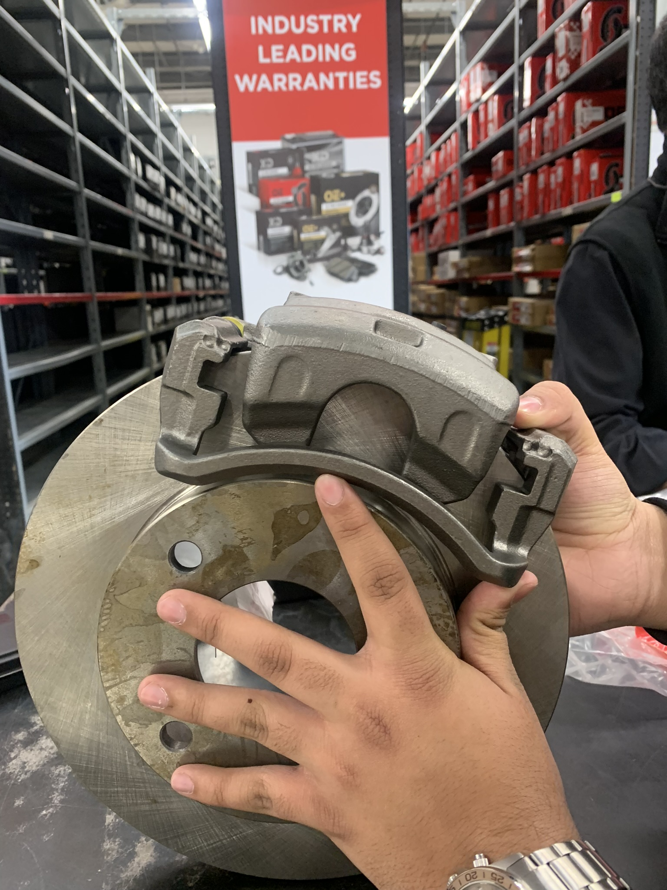
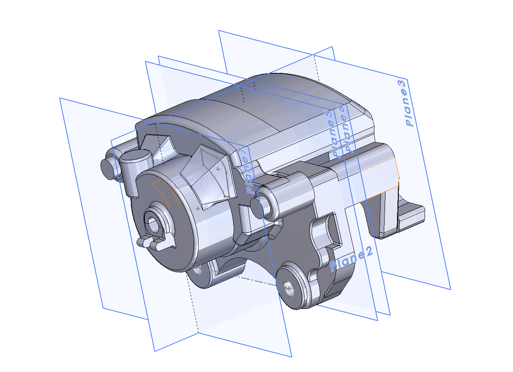
I produced the full set of manufacturing-ready drawings and the validated assembly that show a clear upgrade path from the factory drum setup, built around readily available aftermarket components to keep the kit cost-effective for classic Mustang owners.
Our team was recognized as one of the top in the class, and the final presentation we delivered is now being used as a reference example for incoming students.
↓ Drawing Set (PDF)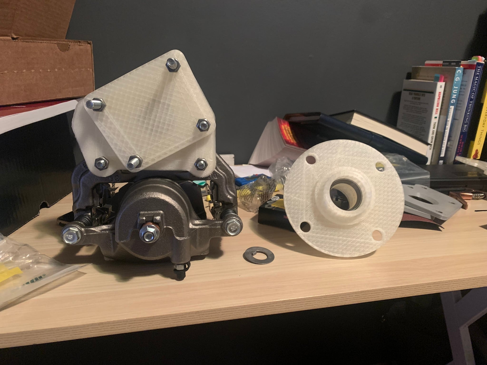
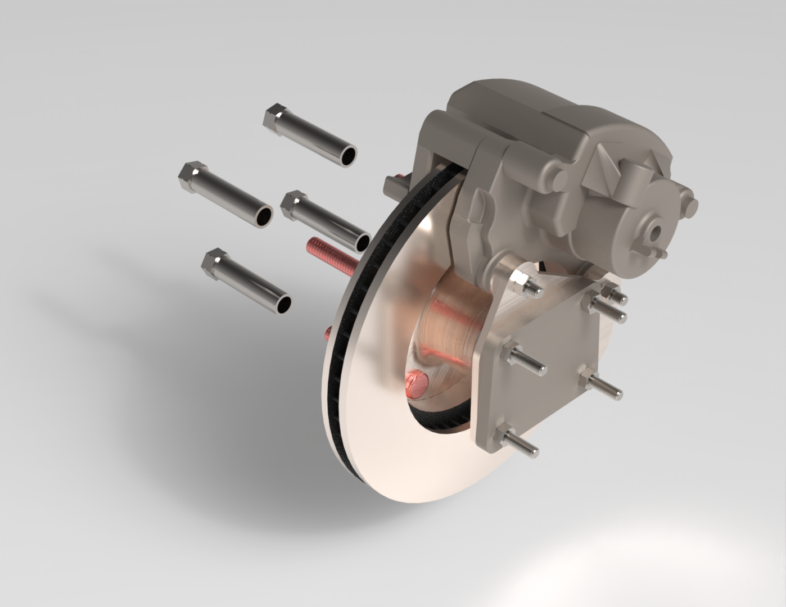
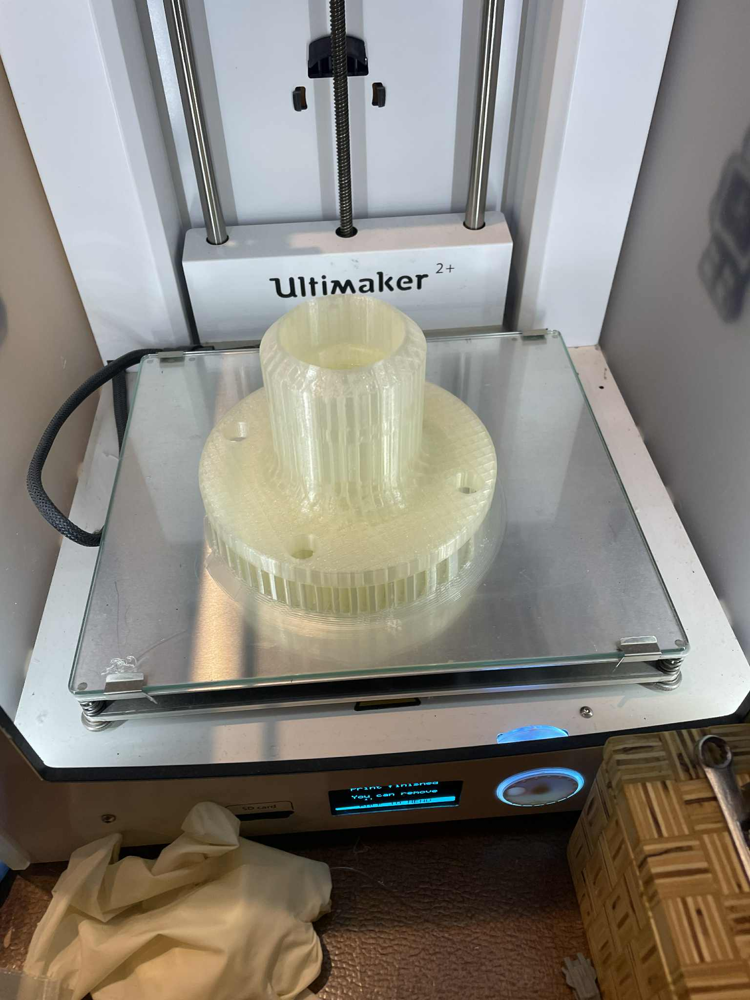